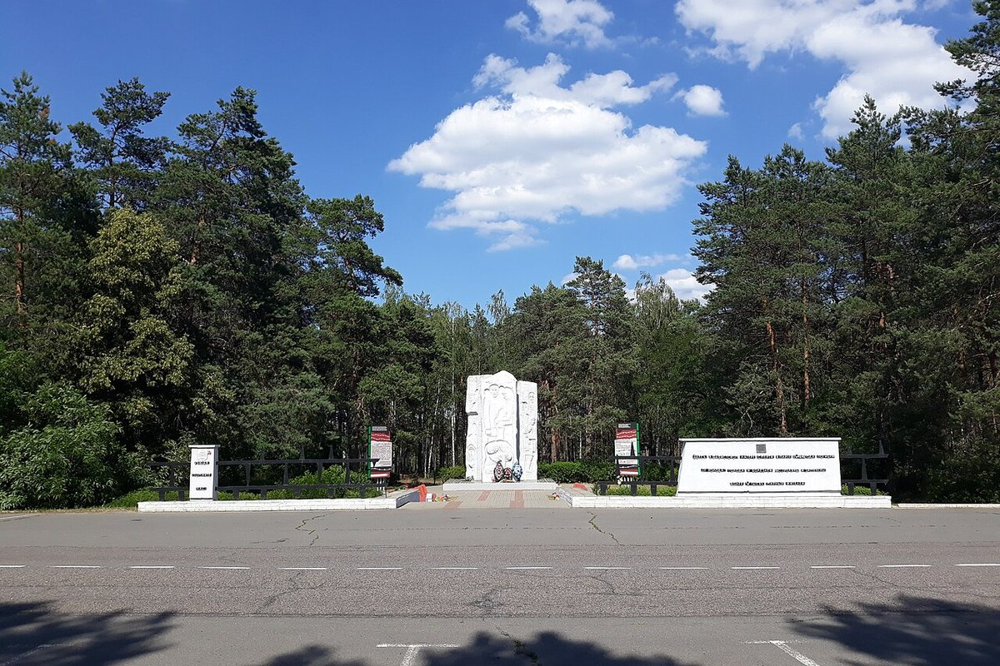
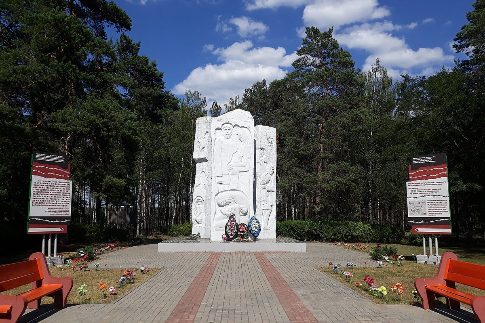
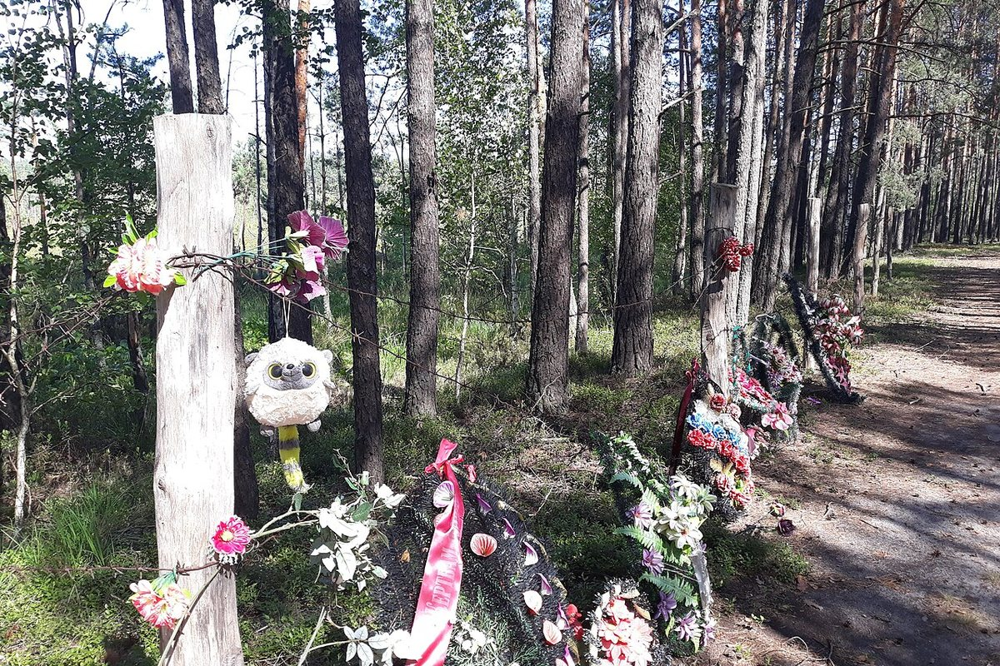

Three temporary death camps established in March 1944. On 18–19 March the Red Army liberated more than 33,000 people.
The Ozarichi death camps were established in March 1944 near the town of Ozarichi and the villages of Podosinnik and Dert. Under the guise of evacuation, more than 50,000 civilians from the Gomel, Mogilev, Polesie, Smolensk and Oryol regions were driven here.
The camps were a swampy area behind barbed wire, without shelter or water. People were held in the open; hundreds died every day from cold and hunger. The Nazis hoped to cause a typhus epidemic and weaken the Red Army’s advance.
On 18–19 March 1944 troops of the 65th Army of the 1st Belorussian Front liberated 33,480 people, including 15,960 children under 13. Medics managed to contain the typhus.
The memorial in Ozarichi opened in 2004 and was reconstructed in 2023–2024. Its central elements are the “Stones of Insight” with archival photographs of prisoners, the “Tower of Memory” and a wall of sorrow by the swamp.


